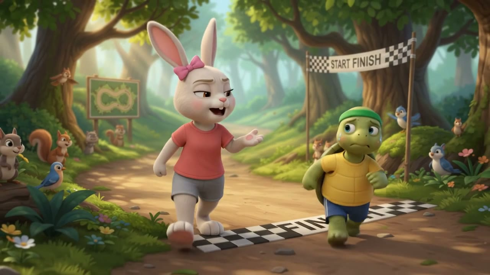
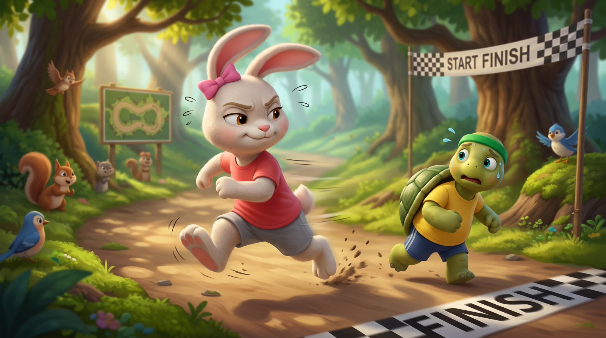
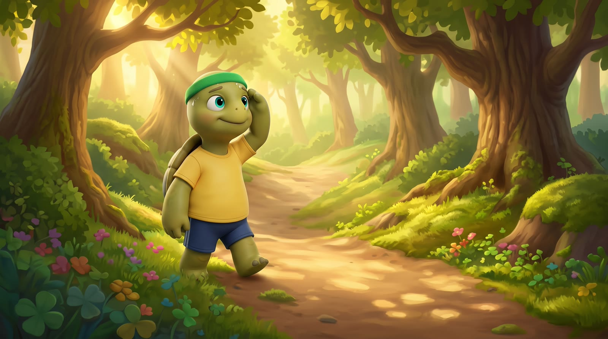
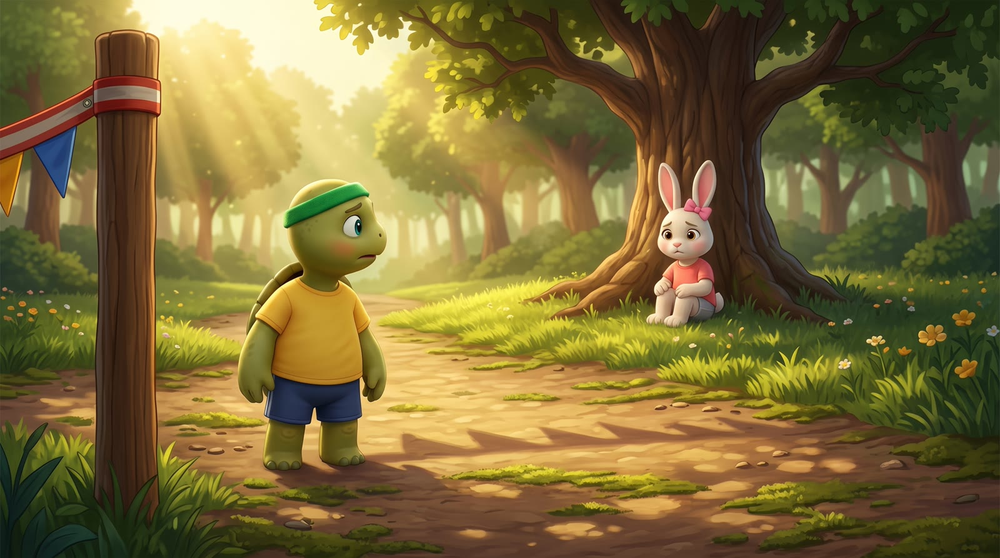
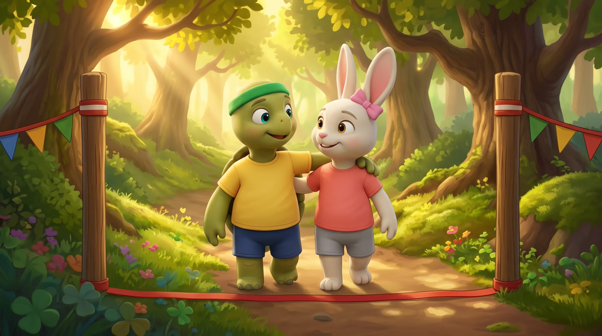

🌱 社會情緒學習 (SEL) 經典改編繪本
龜兔賽跑
SEL 改編版
在森林這場精彩的賽跑裡，兔子學會了認錯與感恩，烏龜展現了冷靜與同理心。
「比獨自贏得第一名更耀眼的，是懂得在夥伴跌倒時，伸出溫暖的手！」
🐢 小烏龜：沉著冷靜・一步一步來
🐰 小兔子：活潑自信・勇於說對不起

第一幕
冷靜的深呼吸
陽光明媚的早晨，森林賽跑大會開始了。起跑線前，兔子得意地嘲笑烏龜：「你走得那麼慢，怎麼可能贏得了我？我看你還是趁早放棄吧！」
烏龜聽了很生氣，但牠沒有大吼發脾氣。烏龜閉上雙眼，深深吸了一口氣，再慢慢吐出所有的氣。讓自己平靜下來後，烏龜微笑著平靜接受了挑戰。
🐢
小烏龜的冷靜魔法：
「吸氣……吐氣……生氣的時候停一停，我的心情就能平靜下來。」

第二幕
一步一步來，我做得到！
比賽開始，兔子像旋風般狂奔，遠遠領先後便在大樹下呼呼大睡：「烏龜大概天黑都爬不到，我先睡個大覺！」
烏龜滿頭大汗地爬著陡峭斜坡，雖然累，但牠擦去汗水，不斷在心中對自己說：「一步一步來，我做得到。」牠踏著穩健的步伐，堅持向前。
🐢
烏龜的神奇加油咒語：
「一步一步來，我做得到！爬坡雖然很累，但只要不放棄，我就能走到終點！」

第三幕
聽見哭聲的溫柔抉擇
突然，一陣傷心的哭聲傳來。原來兔子醒來狂奔時摔傷了腿，正痛苦地坐在地上站不起來。此時終點就在眼前幾步，只要走過去烏龜就能贏得第一名。
但是烏龜停下了腳步。牠感受到兔子的痛，在榮譽與關懷之間，烏龜毅然決定放棄領先，轉身大步走回去伸出援手。
💖
同理心的力量：
烏龜看見兔子的痛。在第一名與受傷的夥伴之間，烏龜選擇了溫暖！

第四幕
微笑着一起跨過終點
烏龜走回去，用小小的肩膀溫柔扶起兔子。兩隻動物互相扶持，一起微笑着跨過了終點線。
兔子羞愧地向烏龜道歉：「對不起，我不該嘲笑你；謝謝你願意回頭幫我！」烏龜微笑握住兔子的手。牠們從競爭對手，變成了最要好的真心朋友。
🤝
真誠的關係修復：
兔子說：「對不起，我不該嘲笑你；謝謝你幫助我！」牠們成了最好的真心朋友。
🎬 40秒 3D 動畫《龜兔賽跑》完整賞析
森林結業式
SEL 社會情緒學習三大法寶
1. 冷靜深呼吸
生氣或慌張時停一下，深呼吸三次讓心情變平穩。
2. 一步一步來
困難想放棄時，給自己一句神奇正向咒語！
3. 同理與真誠道歉
看見朋友的痛，勇敢說對不起與感謝，修復真心友誼。
🏅 領取「SEL 情緒小勇士」榮譽勳章